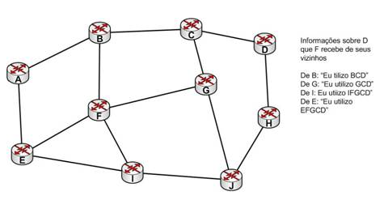

◉ Roteamento BGP
Com o BGP é possível que cada sub-rede anuncie sua existência na grande rede mundial.
Uma sub-rede identifica-se e o protocolo de roteador de borda satisfaz as condições
para que todos os ASs da internet saibam da existência desta sub-rede e, também, como
chegar a mesma. Sem o BGP não seria possível interligar as ASs (KUROSE ; ROSS, 2009).
O BGP é um protocolo complexo. Livros inteiros foram dedicados a ele. Logo, não é demais
mencionar que neste trabalho o que será tratado é apenas em nível de introdução.
“O BGP é um protocolo absolutamente crítico para a internet – em essência, é o protocolo
que agrega tudo (KUROSE & ROSS, 2009,p. 297)”.
Os pares de rotadores trocam informações de roteamento por conexões TCP, usando a porta 179.
Esse tipo de operação possibilita uma comunicação confiável e oculta todos os detalhes da
rede que está sendo usada (TANEMBAUM, 2003).
O protocolo de rotador de borda é fundamentalmente um protocolo de vetor de distância
mas, é bem diferente da maioria dos outros, como o RIP. Em vez de apenas manter o custo
para cada destino, cada roteador BGP tem controle de qual caminho está sendo usado. O
mesmo não utiliza as atualizações periódicas para informar o custo estimado aos seus
vizinhos. O BGP informa o caminho exato que está sendo utilizado (TANEMBAUM, 2003).
Na Figura, consideram-se os roteadores BGP. Especificamente observa-se a tabela de
roteamento de F. Neste exemplo é usado o caminho FGCD para chegar a D. Quando são fornecidas
informações de roteamento, os vizinhos de F transmitem seus caminhos completos, como se
mostra ao lado. Por motivos de simplificação, somente o destino de D é demonstrado.

Após o envio dos caminhos pelos vizinhos, F examina os mesmos para verificar qual é o melhor.
Assim, F já descarta os caminhos com origem em I e E, pois eles passam pelo mesmo F.
Dessa forma, opta-se por B e G. Cada roteador BGP contém um módulo que examina e conta
as rotas para um caminho determinado, retornando um número que identifica a “distância”
até esse destino a cada rota. Após, o roteador adota a rota com a distância mais curta
(TANEMBAUM, 2003).
Outra diferença relevante do BGP com relação aos outros protocolos de vetor de distância é que o problema
de contagem até o infinito inexiste nesse protocolo assim, o BGP obtém uma convergência muito mais rápida
(STALLINGS, 2003). Demais considerações sobre o BGP não serão detalhadas, pois não constam do escopo do
trabalho.